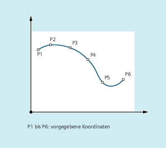
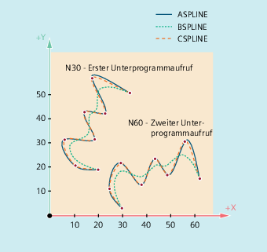

Beliebig gekrümmte Konturen an Werkstücken können nicht analytisch exakt beschrieben werden. Derartige Konturen werden daher durch eine begrenzte Anzahl von Stützpunkten, z. B. beim Digitalisieren von Oberflächen, angenähert. Zur Erzeugung der digitalisierten Oberfläche an einem Werkstück müssen die Stützpunkte zu einer Konturbeschreibung verbunden werden. Dies ermöglicht die Spline-Interpolation.
Ein Spline definiert eine Kurve, die aus Polynomen 2. oder 3. Grades zusammengesetzt wird. Die Eigenschaften an den Stützpunkten eines Splines sind abhängig vom verwendeten Spline-Typ definierbar.
Folgende Spline-Typen stehen bei SINUMERIK solution line zur Verfügung:
A-Spline
B-Spline
C-Spline
Allgemein:
ASPLINE X... Y... Z... A... B... C...BSPLINE X... Y... Z... A... B... C...CSPLINE X... Y... Z... A... B... C...Bei B-Spline zusätzlich programmierbar:
PW=<n>SD=2PL=<Wert>Bei A- und C-Spline zusätzlich programmierbar:
BAUTO / BNAT / BTAN
EAUTO / ENAT / ETAN
| Hinweis |
Das programmierbare Übergangsverhalten hat keinen Einfluss auf den B-Spline. Der B-Spline ist in Start- und Endpunkt immer tangential zum Kontrollpolygon. |
Die Werkzeugradiuskorrektur ist einsetzbar.
Kollisionsüberwachung erfolgt in der Projektion auf die Ebene.
| Programmcode 1 (alle Gewichte 1) |
|---|
| N10 G1 X0 Y0 F300 G64 |
| N20 BSPLINE |
| N30 X10 Y20 |
| N40 X20 Y40 |
| N50 X30 Y30 |
| N60 X40 Y45 |
| N70 X50 Y0 |
| Programmcode 2 (unterschiedliche Gewichte) |
|---|
| N10 G1 X0 Y0 F300 G64 |
| N20 BSPLINE |
| N30 X10 Y20 PW=2 |
| N40 X20 Y40 |
| N50 X30 Y30 PW=0.5 |
| N60 X40 Y45 |
| N70 X50 Y0 |
| Programmcode 3 (Kontrollpolygon) | Kommentar |
|---|---|
| N10 G1 X0 Y0 F300 G64 | |
| N20 | ; entfällt |
| N30 X10 Y20 | |
| N40 X20 Y40 | |
| N50 X30 Y30 | |
| N60 X40 Y45 | |
| N70 X50 Y0 |
| Programmcode |
|---|
| N10 G1 X0 Y0 F300 |
| N15 X10 |
| N20 BNAT ENAT |
| N30 CSPLINE X20 Y10 |
| N40 X30 |
| N50 X40 Y5 |
| N60 X50 Y15 |
| N70 X55 Y7 |
| N80 X60 Y20 |
| N90 X65 Y20 |
| N100 X70 Y0 |
| N110 X80 Y10 |
| N120 X90 Y0 |
| N130 M30 |
Hauptprogramm:
| Programmcode | Kommentar |
|---|---|
| N10 G00 X20 Y18 F300 G64 | ; Startpunkt anfahren. |
| N20 ASPLINE | ; Interpolationstyp A-Spline aktivieren. |
| N30 KONTUR | ; Erster Aufruf des Unterprogramms. |
| N40 ROT Z-45 | ; Koordinatentransformation: Drehung des WKS um -45° um die Z-Achse. |
| N50 G00 X20 Y18 | ; Konturstartpunkt anfahren. |
| N60 KONTUR | ; Zweiter Aufruf des Unterprogramms. |
| N70 M30 | ; Programmende |
Unterprogramm "Kontur" (enthält die Stützpunkt-Koordinaten):
| Programmcode | |
|---|---|
| N10 X20 Y18 | |
| N20 X10 Y21 | |
| N30 X6 Y31 | |
| N40 X18 Y31 | |
| N50 X13 Y43 | |
| N60 X22 Y42 | |
| N70 X16 Y58 | |
| N80 X33 Y51 | |
| N90 M1 |
In der folgenden Abbildung sind neben der Spline-Kurve, die aus dem Programmbeispiel resultiert (ASPLINE), auch die Spline-Kurven enthalten, die sich bei Aktivierung einer B- oder C-Spline-Interpolation ergeben hätten (BSPLINE, CSPLINE):
Siehe auch:
Spline-Interpolation (ASPLINE, BSPLINE, CSPLINE, BAUTO, BNAT, BTAN, EAUTO, ENAT, ETAN, PW, SD, PL): Weitere Informationen
Spline-Verbund (SPLINEPATH)